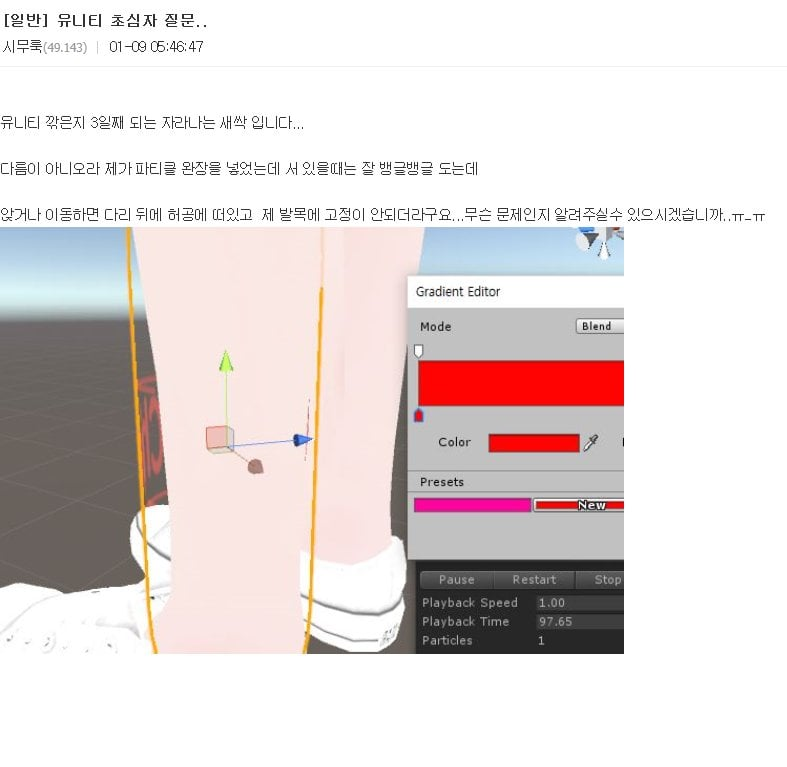
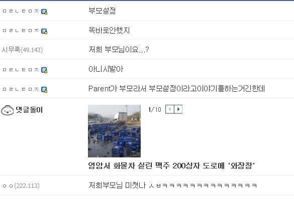

ㅋㅋㅋㅋㅋㅋㅋㅋ
부모자식 설정 잘못해놓으면 저러기 십상이지...
"저거 고아냐?" 라고 했으면 쟤 답장도 안달았을듯
How to kill a child that is an orphan
닉까지 시무룩이라서 졸라귀여워 ㅋㅋㅋㅋㅋㅋㅋㅋㅋㅋㅋㅋㅋㅋㅋㅋㅋㅋㅋㅋㅋㅋㅋㅋ
글쓴놈 아이디가 시무룩이라서 더 웃김 ㅋㅋ
시무룩 ㅋㅋㅋㅋ
시무룩 ㅋㅋㅋㅋㅋ귀엽넼ㅋㅋㅋ
우우스레기
우우 사과해
엄마 없자나!
그거 모를수도있지 다짜고짜 패드립이라뇨... ㅠㅠ
아 겁나 웃기넼 ㅋㅋㅋㅋㅋㅋㅋㅋ
우우 역시 디시놈들 우우 ㅋㅋㅋ
질문 했다고 바로 부모 언급 해버리네 우우쓰레기~
다음에는 엄마 바꿔서 와라 게이야
???: 너 혹시 하프오크니?
패드립 ㅋㅋㅋㅋㅋㅋ
일단 우우쓰레기 박아보지
우우 쓰레기~
파딱 화들짝 놀라는거 시발 ㅋㅋ
부모설정 ㅋㅋ
닉넴도 시무룩 ㅇㅈㄹ ㅋㅋㅋㅋㅋㅋㅋ
난데없이 패드립친 사람이 되어버려서 화들짝 놀라는 ㅋㅋ